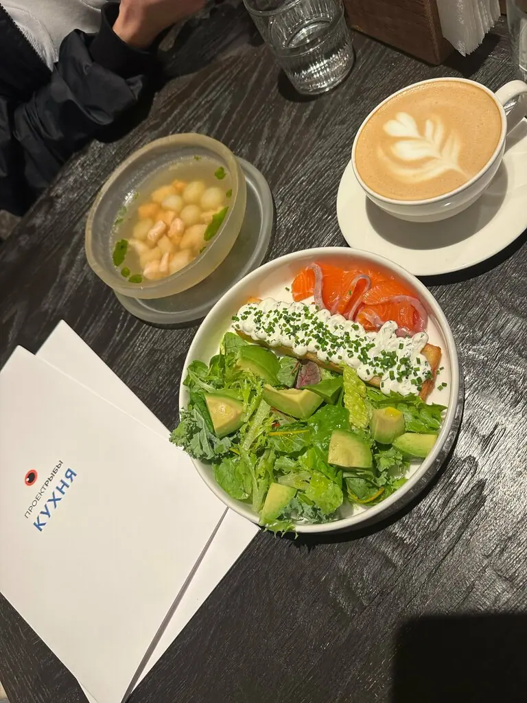
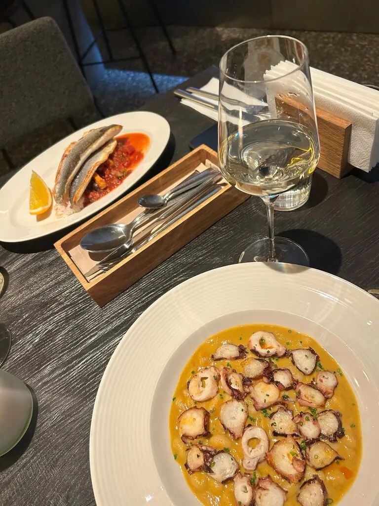
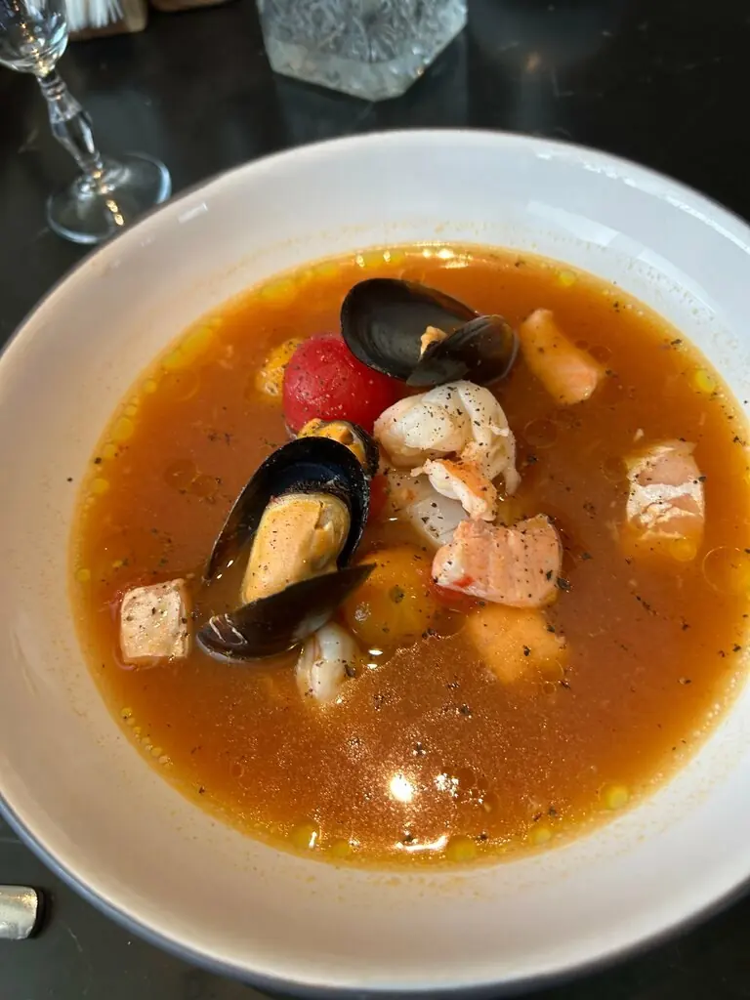
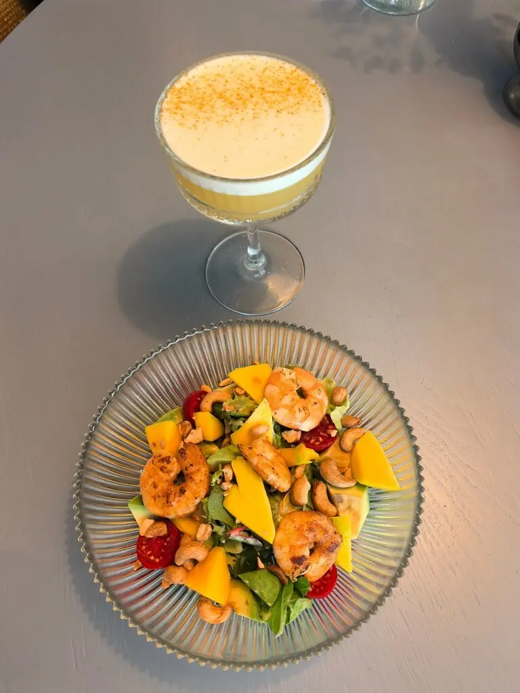
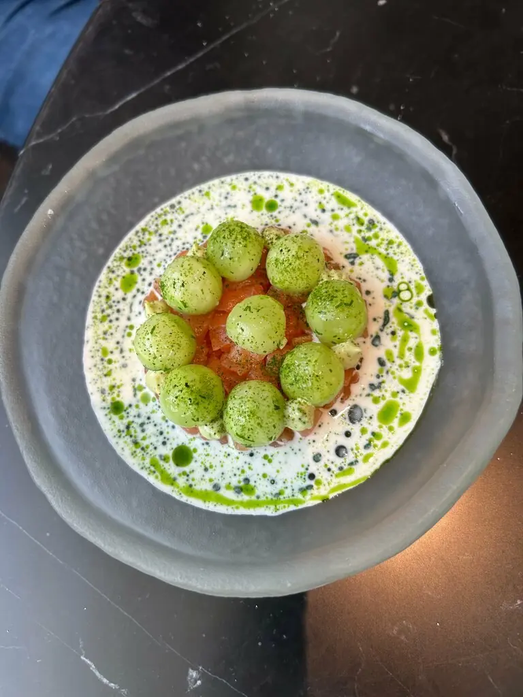
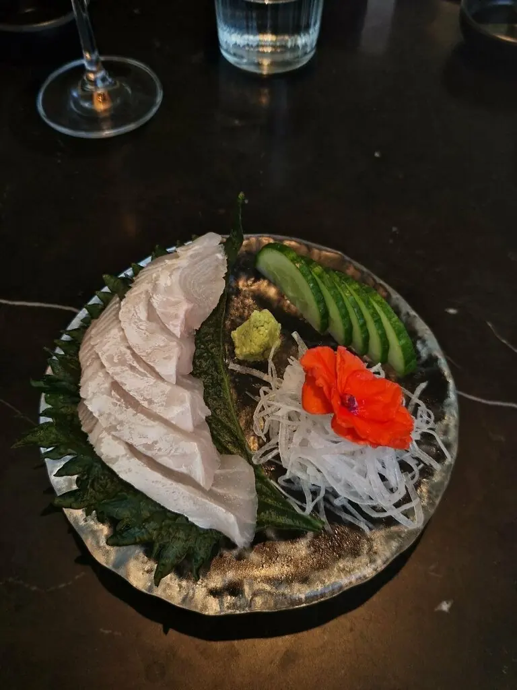
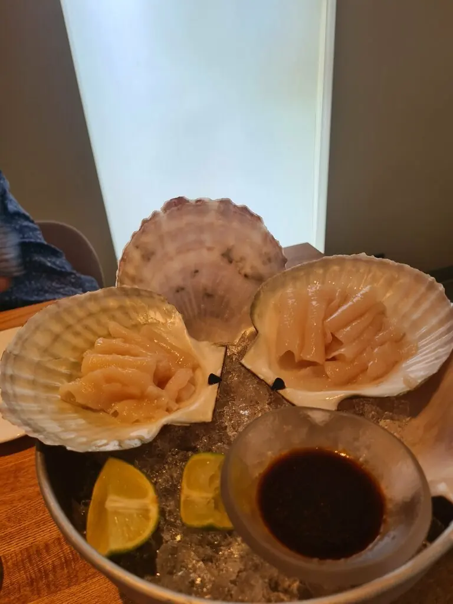

Пермь+7 901 266-32-10
ПроектРыбы
Камерный ресторан на 38 мест с авторской рыбной кухней. Сейчас вы на поверхности. Прокрутите вниз и нырнём к самому вкусному.
4,9 · 218 оценок

10 м · бранчи, 11:00–16:00
На мелководье
Зелёная греча, гребешок, мусс из пармезана570 ₽
Поке с лососем и эдамамэ580 ₽
Бриошь, сёмга, яйцо бенедикт650 ₽
Шпинатный омлет с крабом и биском750 ₽


90 м · горячее
В толще воды
Густой рыбный суп Буридда480 ₽
Котлета из двух видов рыб с эдамамэ530 ₽
Хашбраун с сёмгой и авокадо680 ₽
Нежный сырник с ягодами380 ₽
Часть меню из 2ГИС, цены уточняйте у официанта. Устрицы и морские ежи спрашивайте отдельно.
200 м · что нашли на дне
Сокровища




Голоса с поверхности
Изысканный проект: интерьер, меню, обслуживание, атмосфера! Камерный ресторан для приятного времяпровождения.Лариса Батыкова
Пришёл совсем случайно, просто мимо проходил. Взял том ям, оказалось просто волшебно.Илья Чирков
Сомелье Наталья предложила варианты на наш выбор: напитки прекрасно дополнили блюда.Ольга Корякина
Всплываем за столом
Гости советуют бронировать заранее.